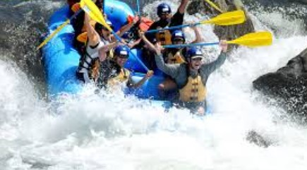

Our Mission
Rafting is an exhilarating outdoor adventure activity that involves navigating a river, often through "whitewater" rapids, using a durable inflatable raft and paddles. It is a popular team sport that requires coordination, communication, and, most importantly, teamwork among a group of 4 to 12 people to successfully navigate the water.
 the
invention of the rubber raft by Lt. John Fremont in the
1840s, and its rise as a commercial sport in the 1940s, gaining international
recognition after the 1972 Munich Olympics.
the
invention of the rubber raft by Lt. John Fremont in the
1840s, and its rise as a commercial sport in the 1940s, gaining international
recognition after the 1972 Munich Olympics.